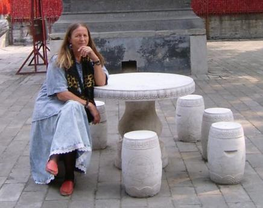

SUZANA FÂNTÂNARIU
Identitate precară
Ciclu de versuri
Poemele marcate cu † au trimiteri la traduceri în rusă de Andrei Bragazin
Home
Contact
A
Absenţa albastră
Aca-Demon sau Arta deformarii
Accident
Adorm cu cerul
Adormirea învăluită în alge
Adormit în culoare, artistul
Agonie de primăvară
Albăstrie ca lacrima dilatată
Albia lumii
Aleea de bronz
Altfel decât eram
Am crescut prin fântâni
Am devenit insulă
Amariei
Anestezie
Angoasă
Anonim
Anotimp răsturnat
Aprilie ucis
Arca
Arta de a pre-simţi
"Aştept coletul", proiect pentru "Utopia O. N."
Atelier plein-air și arta o viață
B
Bariera de gheață
Bucurie albă
C
Cad peste vânt
Călcând portretele de apă
Ceas fără consolare
Cenuşa †
Cinci spre zece
Cineva
Clopot diafan
Clopotul lui Ștefan
Copacul stropit cu ciment
Corp mişcator printre zile, printre nopţi
Cu dimineața în brațe
Cu o stea stinsă în brațe
Cuibul prigoriei împlântat în memorie
Cumpăna cuvintelor
Cuvântul cel mare
Cuvinte de săgeată, săgetând frumuseţea de "a fi"
D
De ce-ar fi toamna ruginie?
De ceară sunt
De soare să mor
Declin aparent
Demiurg
Demonul stepei
Desemnând eternitatea
Devorată de stele
De vorbă cu Romana (un fel de interviu)
Dezgolind trupul de vise
Duhul copilăriei
Durată impură
E
E chipul meu sub tălpi
Ecorșee ale timpului
Ecoul cade strivit
Elogiul melancoliei
Erai ceea ce sunt
Eros neîmpăcat
Exces de melancolie
F
Făuritor de măști regale
Flacăra albă
Foc ascuns
Fragil calendar
Frunza originară
H
Haita
Hartă părintească
Hiat între amintire şi speranţă
I
Ideal
Identitate precară
Iluzia ca adevăr
În crucea de foc a soarelui
În pătratele rotunde
Infinitul curbat
Înger pribeag
Inima la braț cu timpul
Interval între Dumnezeu şi om
Întrebând poetul, de ce moare frunza de tei?
Iubire atemporală
L
Lângă mănăstire
Lumina secretă
M
Mai mult de o veşnicie
Mai tânăr decât crinul
Mărturisire
Mi-e umbra deasă de lumină †
Mielul cel alb
Mistuirea
Muguri de apă
Mugurii trezirii
N
N-am loc în lume
Naştere
Nebuneşte
Nici om şi nici fiară
Nimbul pământului
Nopţi albe
O
O întrupare de rit
Ochiul fără culoare †
Octombrie ucis †
Oglindă vie
P
Pământul - apa - sângele într-una
Păsări cu aripi de gheaţă
Pe altarul vremii
Pernă de ploaie
Pernă cu amintiri, albă, pe valuri
Piatra
Potopul ca liman
Purtător de iluzii, de semne însângerate
Puterea vidului
R
Regina nopţii
Rembrandt iluminat
Ritual de înmormântare
S
S-a-ntrunchipat în sculptură pe soclu
Scânteierea divină †
Semăn cu cineva care mi-a furat chipul
Sihastrul
Somn suspendat
Somnul de fier
Somnul ca veghe
Spaţiu selenar
Spiritul luminii †
Spre muzeul imaginar
Spre pământ tronând
Surâsul tristei Veneţii
Suspinul cel mare
T
Târziu, am descoperit somnul
Târziu am descoperit ca am un corp
Te cunosc ca în palmă
Te cunosc de o mie de ani
Teamă de somn
Timp deformat
Timp răstignit
Timpul sugrumat de umbră nemişcat
Toma
Trebuia să fie
Tristeţe universală
Trupul învelit într-un nor de cenușă
Trupul meu re-găsit
Trupuri înecate în timp
U
Uitat în manuscris
Umbra nemărginirii
Umilinţă
Unii îşi pierd identitatea, şi râd
Urechea lui Neptun
V
Vernisaj
Viața în cifre †
Viaţă plăpândă
Viața și Arta
Vino către nicăieri
Vreau să mor ca să mă re-nasc
Vremea trece prin vene
Z
Zid sprijinit de timp
